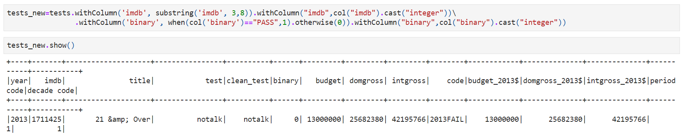

- It is inevitable that randomly generated data could be biased or limited. However, it is important for dataset creators and machine learning developers be transparent about the limitations and potential outcomes of using a biased dataset.
Motivation
There is a trend in Human-Computer Interaction research calling for algorithm awareness and exploration of Human-Centered Machine Learning. For example, Sandvig et al. proposed fundamental research methods to analyze discrimination issues embedded in algorithms on the internet. Researchers have examined algorithmic discrimination and inequity in algorithm design, development, and evolvement through the past few years. Public and well-constructed datasets used for training and building algorithms are always considered essential in the auditing process. There are multiple works focusing on evaluating the transparency and accountability of datasets, e.g., Gebru et al. developed a standardized datasheet to help both creators and consumers document the necessary characteristics of a dataset.
This project, in response to the calls for transparency and algorithmic equity, aims at examining gender-based stereotypes and discrimination in broadly spread public datasets. People have done research mainly in Natural Language Processing (NLP) task-related datasets and illustrated data biases in gender, race, social economic status, etc.(B et al., 2021) However, few works have been done regarding quantitative and categorical data gathered on online social platforms. I use MovieLens 25M dataset created by GroupLens as an example since it is widely used in building recommendation systems in Machine Learning tasks. I’ll focus especially on gender equity and stereotypes in this dataset, and propose prospective outcomes of using a biased/unbiased dataset for algorithm training.
Research Questions
- What are, if any, gender-related biases in the MovieLens 25M dataset?
- Is there gender inequality in Top30 movies on MovieLens?
- What is the relationship between tag descriptions and gender equality?
- Does gender equality in movies somehow impacts what users choose to watch?
- What are the prospective outcomes of using a biased/unbiased dataset for algorithm training in recommender system building, as an example of machine learning tasks?
Data Sources
To address the research questions I proposed, I manipulated and processed two datasets in this project.
Subject Dataset
The subject dataset I used is the MovieLens 25M Dataset (Harper & Konstan, 2015) which is widely used in building recommender systems. According to the dataset description, "this dataset (ml-25m) describes 5-star rating and free-text tagging activity from MovieLens, a movie recommendation service." Generated on November 21, 2019, the data contained in the dataset were created by 162541 users between January 09, 1995 and November 21, 2019. It contains 25000095 ratings and 1093360 tag applications across 62423 movies. (Harper & Konstan, 2015).
The dataset consists of 6 cleaned .csv files with headers. I chose 5 of the files for this project, including: movies.csv, links.csv, ratings.csv, genome-scores.csv, genome-tags.csv.
Note that I intended to use user-defined tags rather than the more objective "genres" in this project, since tags are more flexible and detailed compared to the latter. Also, as tags are user-generated data, it would be more likely to provide insights about gender stereotypes or gender equality topics on Movielens.
Auxiliary Dataset
The auxiliary dataset I used to help the measurement of gender equality in movies is the Bechdel Test Movie List (Bechdel Test Movie List, n.d.). The Bechdel Test, or Bechdel-Wallace Test, sometimes called the Mo Movie Measure or Bechdel Rule is a simple test which names the following three criteria: (1) it has to have at least two women in it, (2) who talk to each other, about (3) something besides a man (Bechdel Test Movie List, n.d.). As it indicates whether there is a relatively independent relationship between women, the Bechdel Test somehow helps illustrate the gender inequality in a movie.
The site BechdelTest.com is operated by committed moviegoers who analyze films and ascertain if they pass the Bechdel test. The site has detailed, coded information for about 5,000 films (Bechdel Test Movie List, n.d.).
According to bechdeltest.com, there are multiple limitations for normal users to gather a full list of Bechdel Test Movie List from the site using API. Thus, the data used in this project were drawn from the article on FiveThirtyEight "The Dollar-And-Cents Case Against Hollywood’s Exclusion of Women": the data are accessible on the GitHub repo. There are 1,615 films released from 1990 to 2013 contained in the sub-dataset (Bechdel Test Movie List, n.d.).
Data Manipulation Methods
Tools
For this project, I'm using Python 3.10.4, pyspark 3.2.1, and University of Michigan Great Lakes service to accomplish data manipulation and analysis.
Data Conversion & Cleaning
Both datasets I used in this project are already cleaned and processed by the creators. The datasets are .csv files with headers, and I imported them using Spark SQL. However, extra conversion and cleaning are needed since there are some mismatches between these two datasets and the goal of my project.
First of all, as the IMDB id is formatted differently in the MovieLens dataset and Bechdel Test List dataset, I cut off the prefix and converted the id into integer in Bechdel Test List dataset to match that in the MovieLens one. Secondly, as I intended to quantify the gender equality situation in the MovieLens dataset, I changed the categorical binary column into a numerical one: if a movie passes the Bechdel Test, it has a numerical value of 1 in the binary column; otherwise, it has a numerical value of 0.
Overall Workflow
I utilized 6 datasets in this project, including: movies.csv (general movie information in MovieLens), ratings.csv (ratings provided by randomly selected users on MovieLens), tags.csv (tagId and its corresponding tag description), scores.csv (tagId and relevance scores on MovieLens), links.csv (movieId in MovieLens and its corresponding imdbId & tmdbId), and tests.csv (imdbId of movies and their Bechdel Test results). The data joining process aims to combine different data files to help with the analysis purpose of this project. An overview of data joining workflow is given below:
Analysis and Visualization
To answer the question "what are, if any, gender-related biases in the MovieLens 25M dataset?", I split it into three sub-questions and used Spark SQL to manipulate and analyze the data.
Q1: Is there gender inequality in Top30 movies on MovieLens?
For question 1, as discussed in the previous section, I combined the following four datasets: movies.csv, links.csv, ratings.csv, and tests.csv. For the gender inequality evaluation, I used the numerical binary value to indicate whether a movie is gender equal or not. Below is the code for the data joining process:
For the evaluation of what are TOP30 movies, I sorted the dataframe in the descending order by the number of users who watched this movie and by the average ratings on MovieLens website. I cut the TOP30 movies in either dataframe for analysis. The ordering codes are shown below:
An overview of the results are following:
Though there are some overlapping movies in the two lists, e.g., The Shawshank Redemption, it is clear that movies that pass the Bechdel Test take up no more than 30% in either list: there are 9/30 movies that are either highly rated or watched by a large number of users passing the Bechdel Test. I also calculated the proportion of movies that pass the Bechdel Test in the combined dataset: it appears that a total of 799/1787=45% movies in the dataframe pass the Bechdel Test.
Although it's hard to state that users on MovieLens are more likely to watch and give higher ratings to movies that don't pass the Bechdel Test (are not gender equal), since the ratings and popularity of a movie are dependent on a variety of factors, it's somehow reasonable to state that there is gender inequality in the MovieLens dataset: compared to the average Bechdel Test result, movies that are more popular/receive higher ratings are more likely to have a lower Bechdel Test result, which indicates that popular and high-quality movies selected by the MovieLens dataset are more likely to be gender unequal.
Q2: What is the relationship between tag descriptions and gender equality?
For question 2, as discussed in the previous section, I combined the following five datasets: movies.csv, links.csv, tags.csv, scores.csv, and tests.csv. Similarly, for the gender inequality evaluation, I used the numerical binary value to indicate whether a movie is gender equal or not. As "the tag genome is a data structure that contains tag relevance scores for movies and the structure is a dense matrix", I only considered tags that have relevance scores of over 0.05 as tags of a movie. Also, I filtered tags that have occurence of over 5 for each movie, which indicates that at least 5 users confirmed that the tag is linked to the movie. For the aggregation step, I grouped the dataframe by tagId and calculated the average Bechdel Test score for each tag. Finally, I ordered the dataframe by the descending order of average Bechdel Test scores. The SQL code for this question is below:

Following is an overview of TOP30 tags:
According to this brief overview, there are some patterns that I would like to address:
- Some female-related tags are expected in the list: beauty pageant, mother daughter relationship, sisters, abortion, heroine, pregnancy, wedding, cheerleading. As Bechdel Test is not an official evaluation of gender equality, it is only an indicator of whether female characters in the movie have built independent relationships, it is not astonishing that these tags have higher Bechdel Test scores. However, weirdly though, none of the above tags have an average Bechdel Test score of 1, which means the expected women alliance in some movies, for example, mother daughter relationship movies, was not built.
- Some queer-related tags have a relatively high Bechdel Test score, such as lesbian, transgender, cross dressing, glbt, which indicates that queer movies may have reached higher gender equality.
- Some of the tags are related to gender stereotypes: ballet, opera, cooking, mtv, dance. The truth is there are male ballet dancers in reality, but this finding shows that movies in the MovieLens dataset are tend to stereotype gender division of labor for females.
- There are movies in the list that related to some specific authors/directors/producers/actors, such as almodovar, jane austen, emma watson, c.s. lewis, iran, broadway. It is delightful to see that there are creators in the film industry that are working toward gender equality in movies.
- The remaining tags, surprisingly, are mainly related to violent, horror, or cult movies, such as slasher, haunted house, vampire, halloween, incest. This phenomenon may indicate that gender discrimination/stereotypes are lessen in avant-garde movies, or in movies that there exists an overwhelming oppression toward the whole unit of human beings.
Q3: Does gender equality in movies somehow impacts what users choose to watch?
For question 3, I combined the following four datasets: movies.csv, links.csv, ratings.csv, and tests.csv. In order to measure users' preference towards movies which pass/fail the Bechdel Test, I multiplied users' ratings and the Bechdel test results as preference scores, and calculated the average preference score for each user. To understand how their preferences impact their movie taste, I also calculated the standard deviation of preference scores for each user. The Spark SQL code is below:
To observe the patterns efficiently, I used Seaborn 0.10.1 to visualize the result for this question. The histgrams of average preferences and standard deviation of preferences for each user are as following:

As presented in the figures, it is obvious that both values fit a skewed normal distribution. The average preference for users in MovieLens are centered around 1.3 and has a long tail on the right. The standard deviation of preference for users in MovieLens are centered around 1.8 and are slightly skewed toward the left. It's worth mentioning that there are a number of users who have a zero value in either of the graphs.
To combine these two graphs together, I used the following command "sns.jointplot(x='avg_preference',y='std_preference',data=df, kind="hex")" to create a 2D joint plot for the result data. The figure is shown below.
By combining the two histgrams into a joint figure, it shows that there are users who do not watch movies that pass the Bechdel Test at all. Also, another pattern in the figure is that for users whose average preference towards movies that pass the Bechdel Test, the movies they chose to watch also varies more than those who don’t care much about gender inequality in movies. This finding might indicate that users who have a higher average preference toward gender equal movies have a higher awareness of the differences between movies that pass/fail the Bechdel Test (consciously choose movies to watch based on gender equality situation) compared to those who have a lower average preference.
Discussion
Gender Inequality in the MovieLens 25M Dataset
According to the data analysis, there is no doubt that there exists gender inequality in the MovieLens 25M dataset. The biases can be categorized into three types: movie popularity, tag descriptions, and user awareness.
For movie popularity, as depicted in the discussion of question 1, movies that are rated higher or watched more are more likely to be gender unequal. Although this phenomenon may result from the biased user population on MovieLens, the limitation of the times, etc., it indicates that the recommendation system built based on MovieLens 25M dataset could potentially give biased recommendation in response to this issue.
For tag descriptions, as portrayed in the discussion of question 2, although some of the tags are reported as relatively “gender equal” in the MovieLens 25M dataset, such as queer-related and cult-related tags, there still exist gender stereotypes and, in general, tags that receive a lot of attention rank low in the chart. As tags are generated by randomly-chosen users on MovieLens, it is likely that gender unequal recommendation results will continue be prioritized based on a system built on tag relevance.
For user awareness, corresponding to question 3, it appears that users in the MovieLens 25M dataset tend to be diverse on movie preferences: there are both users who are open to both gender equal and unequal movies and rate the former higher, but also those who only watch gender unequal movies. However, there are few users who only watch gender equal movies. One possible reason of this phenomenon could be the gender inequality in film production industry, while it deserves reflection how the inequality can be enhanced in big data and machine learning tasks.
Prospective Outcomes of Using A Biased Dataset
As MovieLens 25M dataset is widely used for data training in building recommendation systems in computer science, it is important to point out some prospective outcomes of using a gender-biased dataset, including personal and social impacts. In addition, I will propose several possible solutions to tackle or lessen the impact of these issues.
Personal Impact: Collaborative Filtering & Cold Start
This section discussing personal impact of using a biased dataset will focus on two major strategies in recommendation systems: collaborative filtering and cold start.
To address existing limitations in traditional filtering strategies, collaborative filtering uses similarities between users and items simultaneously to provide recommendations (Collaborative Filtering | Machine Learning, n.d.). Specifically, there are two kinds of collaborative filtering strategies: similarity between user & user, and similarity between user & item. For the former strategy, the recommendation system will give movie recommendations based on users who have the similar preferences as the user. According to our analysis, as the user population in MovieLens 25M dataset is polarized, it is likely that there are users who will only receive gender inequal recommendations, which re-enforce the biases in movie popularity and for the user themselves. For the latter strategy, the recommendation system will give recommendations based on items/tags that are similar to what users prefer in the past. For the same reason, this will also enhance the gender inequality in the dataset and gender stereotypes of the user.
Another critical issue comes up in the cold start process. Cold start problem is what the recommendation system should operate when it comes to new communities/users/items. Typically, how computer science scientists address this problem is through recommending based on general popularity of movies/tags. Apparently, there are problems given the biased nature of the dataset: for example, new users in the recommendation system will receive recommendation based on the most popular movies or tags in the MovieLens dataset, which will likely be gender unequal ones.
Social Impact: Online Community & Film Industry
Using a biased dataset is also potentially toxic to the online community, for example, the MovieLens website, and to the entire film industry. The recommendation system determines and enhances the trend in both communities, as it has the power to encourage or disencourage the audience to make choices on which movie to watch, on which film to spend money on, and what the market should be like. Built based on a gender-biased dataset, it is possible that the movement of gender equity becomes harder to achieve not only in polarized and sexist online communities, but also in the creation and production phase of movies.
Solution Suggestions
Here are some roughly proposed solutions to the problems I identified in pervious sections:
- Conduct and document dataset auditing for big data projects: as a beginning step, I hereby call for dataset auditing for big data and machine learning fields, since strategies utilized in these fields are more likely to enhance the biases in datasets and distribute the impact to individuals and the entire society.
- Be transparent about the limitation of the datasets: following the first suggestion, it is inevitable that randomly generated data could be biased or limited. However, it is important for dataset creators and machine learning developers be transparent about the limitations and potential outcomes of using a biased dataset. It also helps raise awareness for users who are receiving recommendations from the biased system they built.
- Purposively sample or reorganize gender-equal training data for machine learning tasks: manipulating datasets is a common strategy used in machine learning to tackle the “imbalanced data” problem. I would like to call for the migration of this method to tackle the biased data problem. The impact of a biased dataset can always be weaken or eliminated by critically manipulating the dataset to be balanced and equal.
- Increase the recommendation diversity in recommendation systems: for recommendation systems, specifically, I would recommend developers and designers consider diversity as an important factor in evaluating the performance of a recommendation system as well as accuracy. By adding diverse recommendations to the results, the polarized filter bubbles will be removed and finally help the community move toward equality.
References
- B, S. K., Chandrabose, A., & Chakravarthi, B. R. (2021). An Overview of Fairness in Data – Illuminating the Bias in Data Pipeline. Proceedings of the First Workshop on Language Technology for Equality, Diversity and Inclusion, 34–45. https://aclanthology.org/2021.ltedi-1.5
- Bechdel Test Movie List. (n.d.). Retrieved October 7, 2022, from https://bechdeltest.com/
- Gebru, T., Morgenstern, J., Vecchione, B., Vaughan, J. W., Wallach, H., Daumé III, H., & Crawford, K. (2021). Datasheets for Datasets (arXiv:1803.09010). arXiv. https://doi.org/10.48550/arXiv.1803.09010
- Harper, F. M., & Konstan, J. A. (2015). The MovieLens Datasets: History and Context. ACM Transactions on Interactive Intelligent Systems, 5(4), 19:1-19:19. https://doi.org/10.1145/2827872
- Sandvig, C., Hamilton, K., Karahalios, K., & Langbort, C. (2014). Auditing algorithms: Research methods for detecting discrimination on internet platforms. Data and Discrimination: Converting Critical Concerns into Productive Inquiry, 22, 4349–4357.
- Collaborative Filtering | Machine Learning. (n.d.). Google Developers. Retrieved October 29, 2022, from https://developers.google.com/machine-learning/recommendation/collaborative/basics